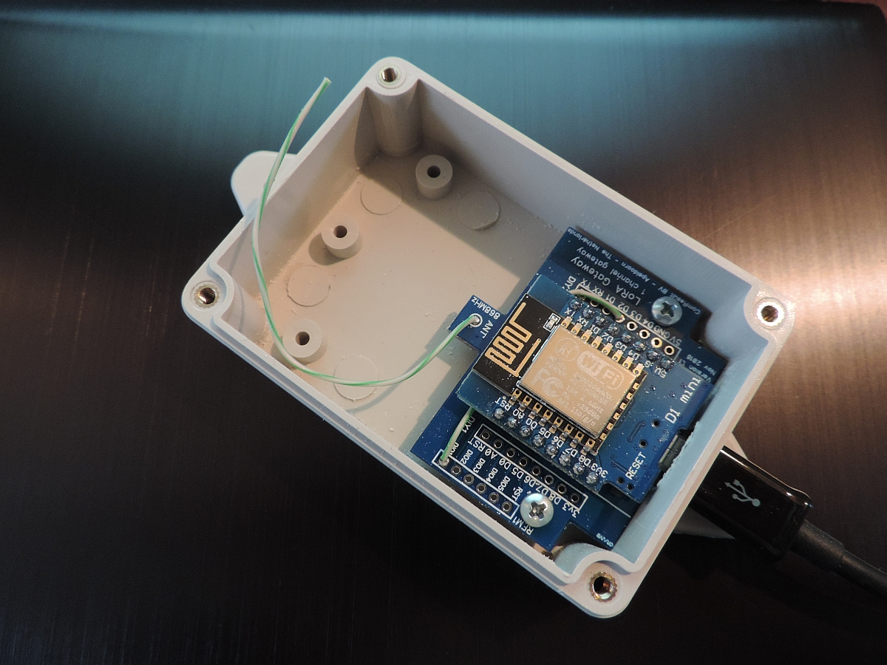
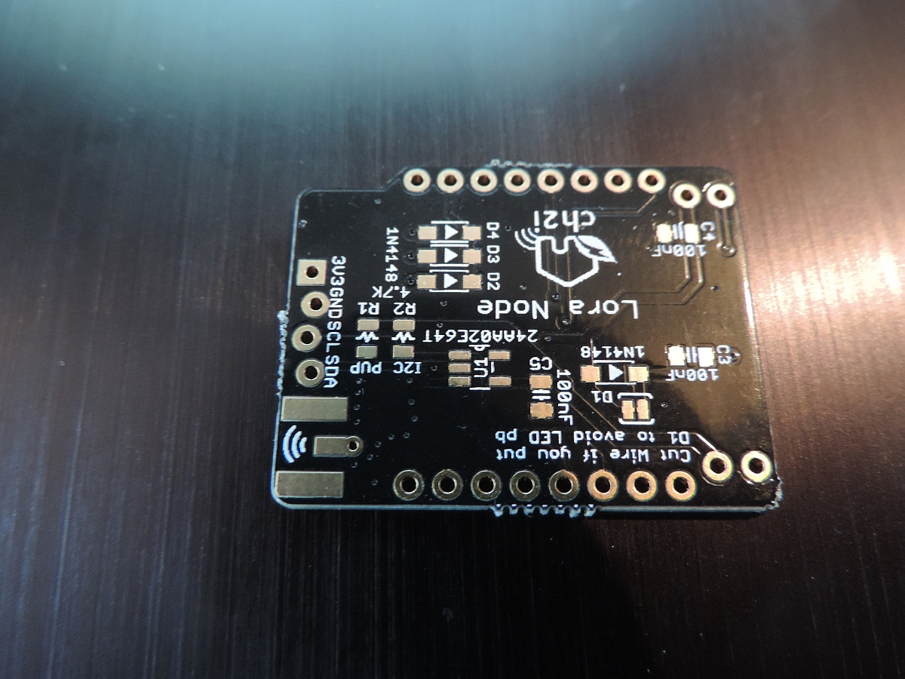
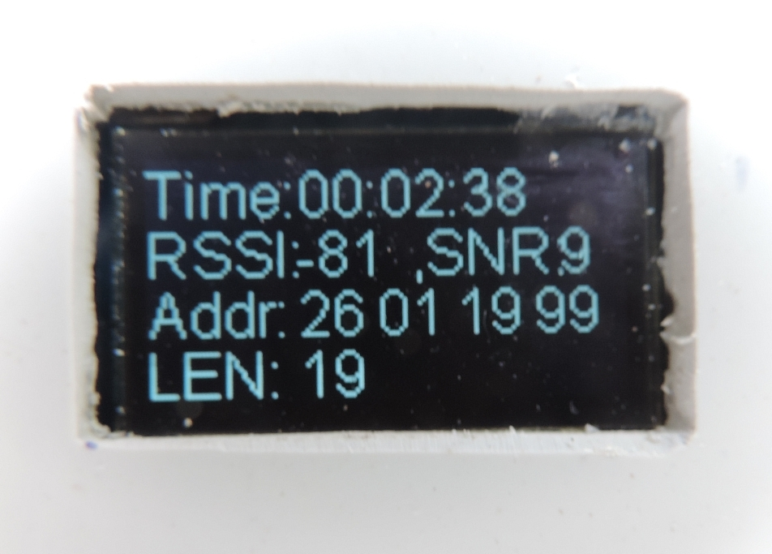
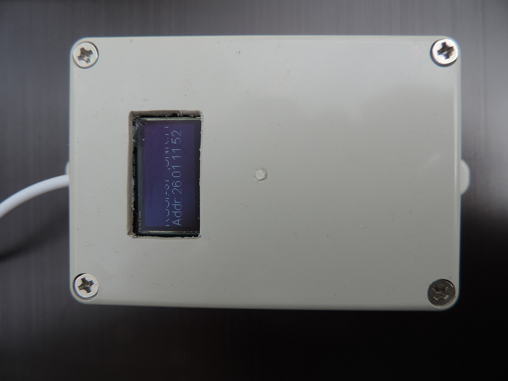

{kind=link}

Code Version: 5.0.4E
date: January 13, 2018
(c) Maarten Westenberg (mw12554@hotmail.com)
|  |
Single Channel Gateway based on traditional PCB |
Not long ago the esp32 was a new an pricey option for building you own Lora single channle gateway. But since a few weeks there has been a new kid on the block: The TTGO board based on the ESP32 chips and with an on-board SX1276 chip, a battery charger circuit and even with OLED support.
This means that it is a good candidate for single channel gateway building.
A full-function gateway is capable of simultaneously receive several LoRa packets with various spreading factors on random channels. The 1-channel gateway does not have the performance to do all that. It is sort of compatible with the LoRa data format sent by sensors but it does not implement the "support at least 3 frequencies" part of the LoRa specs and therefore is not compliant.
The 1-channel gateway has the following limitations compared to its bigger brother:
As you can see on the picture above, the whole thing fits on a very small board. And as there are even less connections necessary as for the loRa node, this DIY project could be ready in a matter of hours. These are the steps:
The pin out of the two devices on the gateway board are as follows:
The pin-out of the TTGO ESP32 board is as follows:
The ComResult PCB is a next version of the Bare Board solution and uses the same pin definitions. Please make sure that you connect dio1 to D2 on the board with a wire (and connect dio2 to D3/GPIO0 in order to use the gateway as a node later).

You see a picture above of one of the latest versions of the ComResult board. Please not the 2 wires that connect the D2 pin of the ESP8266 with the dio1 pin of the RFM95 and optionally the D3 pint with the dio2 pin.
For the bare board solutions the connections that need to be made are as follows:
| RFM95 pin | ESP8266 pin | |
|---|---|---|
| 3.3V | VCC | 3.3V |
| GND | GND | |
| MISO | D6 GPIO12/MISO | |
| MOSI | D7 GPIO13/MOSI | |
| SCK | D5 GPIO14/CLK (*) | |
| NSS | D8 GPIO15/CS | |
| RESET | *nc | |
| DIO0 | D1, GPIO5 | |
| DIO1 | D2, GPIO4 | |
| DIO2 | D3, GPIO0 (**) |
* The reset pin does not have to be connected so it seems. It is only used at setup to read the chip identification
** This connection is not necessary for the current version of the gateway, but is more versatile for next versions or other use
As you can see, both reset and GPIO0 of the ESP8266 are not used. Not connecting the last one makes the ESP8266 gateway more stable and the behavior between flash and normal mode is the same.
Carles Hallard has designed a very small board that can be used to build your own gateway. The boards are available from pcbs.io abs will be shipped for free anywhere in the world in quantities of 5 pieces.

On the top left you can see the place where to solder the 3 diodes which connect dio0, dio1 and dio2 to GPIO15.
The Hallard board is slightly different from the bare-board or ComResult pcb as it will share dio0, dio1 and dio2 with the same GPIO pin over 3 diodes. This requires small adaptations of the LMIC software should you want to use thisPCB to build a node, and it does require some additional work at the gateway if you like to work with the latest version of the gateway.

For the bare board solutions the connections that need to be made are as follows:
| RFM95 pin | ESP8266 pin | |
|---|---|---|
| 3.3V | VCC | 3.3V |
| GND | GND | |
| MISO | D6 GPIO12/MISO | |
| MOSI | D7 GPIO13/MOSI | |
| SCK | D5 GPIO14/CLK (*) | |
| NSS | D0 GPIO16/CS | |
| RESET | *nc | |
| DIO0 | D8, GPIO15 (**) | |
| DIO1 | D8, GPIO15 (**) | |
| DIO2 | D8, GPIO15 (**) |
* The reset pin does not have to be connected so it seems. It is only used at setup to read the chip identification
** Soldering small diodes at the position shown above is quite difficult! And moreover, once you have soldered the ESP8266 to this board you cannot reach the diode position ever again. So (!) make sure you solder all 3 diodes (but at least 2) before continuing with this board.
As you can see, both reset and GPIO0 of the ESP8266 are not used. Not connecting the last one makes the ESP8266 gateway more stable and the behavior between flash and normal mode is the same.
The software is currently, and will probably always be, under development. Several additions have been made to the RaspberryPI version in order to make this ESP version more reliable and workable. However, there are still some functions that can be included such as setting the SSID and password dynamically (The ESP will act as an access point so that your PC can connect to it, and set SSID and Password).
It is expected that TTN (and others) will release low priced full Lora Gateways somewhere in the 2017/2018 timeframe. Until then a Single Channel Gateway will offer a lot of benefits for those that like to have a Gateway at home for testing or demonstration.
The user interface of the Gateway will make it even more useful. After all, most full Lora Gateways have very limited debug value for those of us that have no Linux or similar background.
Please find the software on github
The ESP libraries support DNS hostnames out of the box. As apparently DNS functions are hard on the mcu, and may cause crashes and watchdog resets, I have decided to only once get the IP address of the LoRa router and from that moment on use that IP address in the program.
The clock function is implemented using NTP. As soon as we have an IP connection we try to connect to a timeserver to get the current time. This way we know how long the unit is operational since we last powered it on, and can we time things if necessary.
As the ESP8266 is not a Linux machine, so it has no local disk storage, at least not out of the box. It also lacks the possibility to make a SSH connection as you can with a RaspberryPI for example. Still we would like to know how the device is doing, and how long it is operating without any problems. The latter is easy to measure if we look at the time that the gateway is operational. If that time is after the moment we plugged the gateway in, it probably suffered from a Watchdog reset and has restarted since.
Over the last months, several people have tried to convince me of the value of having OLED support in the single channel gateway. So I built support for the OLED as of software version 4.0.8 of the gateway.

So although I'm not always convinced of its use, I have included the OLED code in gateway software. At the moment, at run-time and after initialisation the code is executed in the _loraModem.ini file. As such, it is called directly when receiving a message over the air. This makes it respond quick to incoming messages but at the same time it will make execution time in interrupt longer which may lead to unexpected Exception/watchdog resets.
|  |
|
Should such occur, consider filling the statistics buffer only and get the latest value in the loop() function in user time.
The pin's used for OLED are pin4/D2 for SDA and pin5/D1 for SCL. These pin's are free to use for the Hallard configuration.
These pins are in use for the Comresult board. For this configuration alternate pin's must be used which means that no pins are left over for other work such as sensors. D0 and D4 may be used (Not tried yet, so use at your own risk).
The following links contain useful information for this project.
Some interesting reading material can be found for example to control your ESP8266 device, the message format of LoRa compliant gateway etc etc:
I think we all ask the same questions:
There are some things to remember however:
This chapter is reserved for displaying some more pictures (if available).
{kind=link}
{kind=link}
{kind=link}